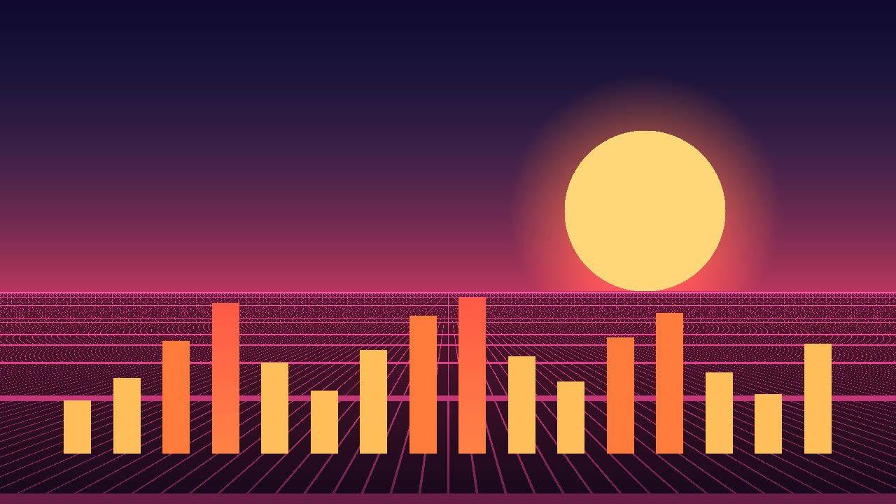

Outrun Arpeggios

These notes are fetched from the arpeggio MIDI file. Taller, hotter bars are louder accents. The chord is not drawn in this lane.
softer attacks velocity 90 to 109 velocity 110 and up
This reference is fetched from its own MIDI file. It shows the chord the arpeggio outlines. It is not merged into the arpeggio lane.
Arpeggios are monophonic, MIDI 48 to 84. Harmonic references use MIDI 48 to 76, at most four notes, and are not part of the core count. C4 is 60.
Use either the combined arrangement or the separate parts. Do not stack the part files on top of the combined file.
| Part | Role | Var | Count | BPM | Notes |
|---|---|---|---|---|---|
| s01.arp.a | arpeggio | a | core | 112 | 96 |
| s01.harmony.a | harmonic-reference | a | harmonic reference | 112 | 48 |
| s01.arp.b | arpeggio | b | core | 112 | 96 |
| s01.harmony.b | harmonic-reference | b | harmonic reference | 112 | 48 |
| s02.arp.a | arpeggio | a | core | 104 | 80 |
| s02.harmony.a | harmonic-reference | a | harmonic reference | 104 | 48 |
| s02.arp.b | arpeggio | b | core | 104 | 64 |
| s02.harmony.b | harmonic-reference | b | harmonic reference | 104 | 48 |
| s03.arp.a | arpeggio | a | core | 120 | 64 |
| s03.harmony.a | harmonic-reference | a | harmonic reference | 120 | 48 |
| s03.arp.b | arpeggio | b | core | 120 | 64 |
| s03.harmony.b | harmonic-reference | b | harmonic reference | 120 | 48 |
| s04.arp.a | arpeggio | a | core | 100 | 24 |
| s04.harmony.a | harmonic-reference | a | harmonic reference | 100 | 24 |
| s04.arp.b | arpeggio | b | core | 100 | 24 |
| s04.harmony.b | harmonic-reference | b | harmonic reference | 100 | 24 |
| s05.arp.a | arpeggio | a | core | 124 | 80 |
| s05.harmony.a | harmonic-reference | a | harmonic reference | 124 | 48 |
| s05.arp.b | arpeggio | b | core | 124 | 80 |
| s05.harmony.b | harmonic-reference | b | harmonic reference | 124 | 48 |
| s06.arp.a | arpeggio | a | core | 108 | 96 |
| s06.harmony.a | harmonic-reference | a | harmonic reference | 108 | 48 |
| s06.arp.b | arpeggio | b | core | 108 | 64 |
| s06.harmony.b | harmonic-reference | b | harmonic reference | 108 | 48 |
| s07.arp.a | arpeggio | a | core | 96 | 32 |
| s07.harmony.a | harmonic-reference | a | harmonic reference | 96 | 48 |
| s07.arp.b | arpeggio | b | core | 96 | 48 |
| s07.harmony.b | harmonic-reference | b | harmonic reference | 96 | 48 |
| s08.arp.a | arpeggio | a | core | 118 | 96 |
| s08.harmony.a | harmonic-reference | a | harmonic reference | 118 | 48 |
| s08.arp.b | arpeggio | b | core | 118 | 48 |
| s08.harmony.b | harmonic-reference | b | harmonic reference | 118 | 48 |
Study 01 variation A, all 16 bars, arpeggio plus harmonic reference
This MP3 is 34.29 seconds. preview, not a master. The film is 34.29 seconds and shows preview, not master.
No program changes are encoded. A conventional GM player will normally use its default piano program for pitched channels unless configured otherwise; compatible GM channel 10 percussion is treated separately. Player behavior may vary.
No human listening audition was performed for this build.
The GitHub repository is https://github.com/mizcausevic-dev/outrun-arpeggios and it is public. The catalog page is https://mizcausevic-dev.github.io/outrun-arpeggios/ .
Article draft, not posted: Markdown · plain text